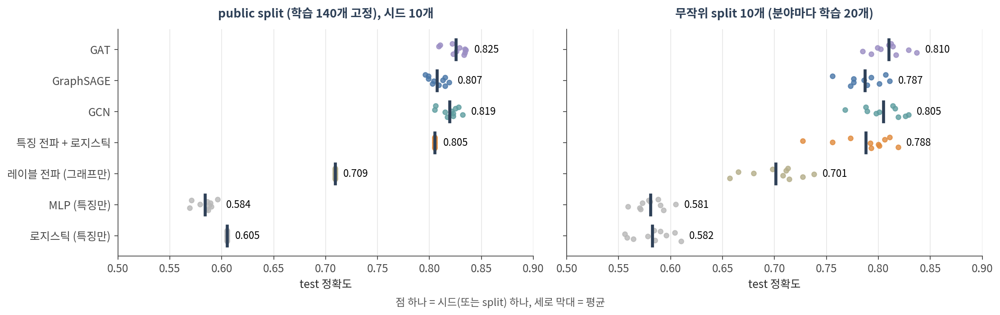
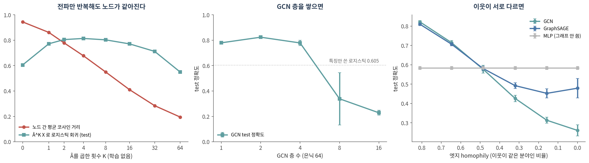

12. 그래프 신경망
이 챕터를 마치면 다음을 할 수 있습니다.
- 메시지 전달을 aggregate + update로 설명하고, 🔗 06의 RWR과 무엇이 같고 무엇이 다른지 말할 수 있다
- CNN을 그래프에 그대로 쓸 수 없는 이유를 말할 수 있다
- GCN·GraphSAGE·GAT·GIN이 이웃을 모으는 방식의 차이를 표로 비교할 수 있다
- ⚠️ GNN을 특징만 쓴 모델, 그래프만 쓴 모델과 같은 split에서 비교할 수 있다
- ⚠️ 과평활화·과압축·heterophily가 무엇이고 언제 그래프가 오히려 해가 되는지 실측으로 말할 수 있다
- 1-WL 검정으로 GNN이 구별하지 못하는 그래프가 있다는 것을 보일 수 있다
🤔 생각해볼 질문
PPI 네트워크 위의 GNN으로 질병 유전자를 예측했더니 성능이 아주 좋았습니다. 그 성능 중 얼마가 “그래프” 덕분이고, 얼마가 “신경망” 덕분일까요?
1. 메시지 전달 📨
1) 왜 CNN을 그래프에 그대로 못 쓰나
- 🔗 10 §1의 CNN 필터는 격자를 가정합니다. 모든 위치에 왼쪽·오른쪽 이웃이 정해진 수만큼 있고, 순서가 있습니다
- 그래프에는 둘 다 없습니다
- 이웃 수가 노드마다 다릅니다 — 차수 1인 노드와 수백인 허브가 공존합니다 (🔗 03 §1)
- 이웃에 순서가 없습니다 — “첫 번째 이웃”이라는 것이 없으니 필터의 칸에 대응시킬 수 없습니다
- 인접 행렬을 통째로 MLP에 넣으면? 노드 번호를 바꾸기만 해도 출력이 바뀌고, 노드가 하나 늘면 입력 크기가 바뀝니다
- ✅ 해법: 이웃을 순서와 무관한 함수(합, 평균, 최댓값)로 모읍니다. 이웃이 몇 개든, 어떤 순서든 결과가 같습니다
2) aggregate + update
한 층에서 노드 v의 표현 h_v는:
\[ h_v^{(k+1)} = \text{UPDATE}\Big(h_v^{(k)},\; \text{AGGREGATE}\big(\{h_u^{(k)} : u \in N(v)\}\big)\Big) \]
- aggregate — 이웃들의 현재 표현을 모읍니다 (평균, 합, 어텐션 가중 평균)
- update — 모은 것과 내 표현을 합쳐 학습되는 행렬 W를 곱하고 활성함수를 씌웁니다
- 층 하나 = 한 걸음. k층을 쌓으면 k-hop 이웃까지 봅니다
- W는 모든 노드가 공유합니다 — 10의 가중치 공유를 그래프에 옮긴 것. 그래서 파라미터 수가 노드 수와 무관하고, 새 노드에도 바로 적용됩니다 (🔗 11 §4의 한계 해결)
- 이 틀을 메시지 전달(message passing)이라 부릅니다 (Gilmer et al. 2017)
3) RWR에 학습을 끼우면
🔗 06 §2의 RWR과 GCN 층을 나란히 놓으면:
| 한 번의 갱신 | 학습되는 것 | |
|---|---|---|
| RWR / 레이블 전파 (06) | p ← α·Â p + (1 − α)·p₀ | 없음 (α만 고름) |
| 특징 전파 + 로지스틱 (SGC) | Â^K X 를 만든 뒤 로지스틱 회귀 | 마지막 W 하나 |
| GCN | H ← σ(Â H W) | 층마다 W |
- Â = 자기 루프를 더하고 차수로 정규화한 인접 행렬. 곱하면 “나와 이웃의 평균”이 됩니다 — RWR의 한 걸음과 같은 연산입니다
- GCN은 여기에 W(특징 변환)와 σ(비선형)를 끼웠습니다 (Kipf & Welling 2017)
- 🔗 08 §1의 교훈대로 σ를 빼면 층들이 접혀 Â^K X W 하나가 됩니다. 실제로 비선형을 모두 빼고 가중치를 하나로 접은 SGC는 여러 과제에서 정확도가 떨어지지 않았습니다 (Wu et al. 2019)
- 반대 방향으로, GCN과 PageRank의 관계를 이용해 개인화 PageRank(= RWR)로 전파하는 모델도 있습니다 (APPNP; Gasteiger et al. 2019)
- 💡 🔗 06 §1에서 “이웃에게서 받아 나를 갱신하고 반복한다”가 relational classification·belief propagation의 공통 뼈대라고 했습니다. GNN은 그 뼈대에 학습되는 W를 붙인 것입니다
2. GCN · GraphSAGE · GAT 🧩
1) 이웃을 모으는 네 가지 방식
| 모델 | 이웃을 어떻게 모으나 | 나 자신은 | 특징 | 원 논문 |
|---|---|---|---|---|
| GCN | 차수로 정규화한 평균 | 자기 루프로 이웃과 함께 섞음 | 스펙트럴 그래프 합성곱의 1차 근사에서 출발, 계산량이 엣지 수에 비례 | Kipf & Welling 2017 |
| GraphSAGE | 이웃(표본)의 평균·최댓값 등 | 내 표현을 따로 변환해 합침 | 노드별 벡터 대신 함수를 배움 → 처음 보는 노드에도 적용 | Hamilton et al. 2017 |
| GAT | 어텐션 가중 평균 — 이웃마다 다른 가중치 (🔗 10 §3) | 자기 루프 | 가중치를 입력에서 계산 | Veličković et al. 2018 |
| GIN | 합 + MLP | (1 + ε)배로 더함 | §3-4의 WL 검정만큼 구별 가능 | Xu et al. 2019 |
- 💡 차이는 aggregate를 어떻게 하느냐 하나입니다. 모두 §1-2의 틀 안에 있습니다
- ⚠️ 이름보다 나 자신을 이웃과 섞느냐, 따로 두느냐가 중요할 때가 있습니다 → §3-3
2) 실측 — Cora

| 모델 | 무엇을 쓰나 | public split (시드 10개) | 무작위 split 10개 |
|---|---|---|---|
| 로지스틱 회귀 | 노드 특징만 | 0.605 | 0.582 ± 0.019 |
| MLP | 노드 특징만 | 0.584 ± 0.009 | 0.581 ± 0.013 |
| 레이블 전파 (06의 RWR) | 그래프만 | 0.709 | 0.701 ± 0.026 |
| 특징 전파 + 로지스틱 (SGC) | 둘 다, 학습되는 W 하나 | 0.805 | 0.788 ± 0.028 |
| GCN | 둘 다 | 0.819 ± 0.009 | 0.805 ± 0.019 |
| GraphSAGE | 둘 다 | 0.807 ± 0.008 | 0.787 ± 0.017 |
| GAT | 둘 다 | 0.825 ± 0.010 | 0.810 ± 0.016 |
(로지스틱 회귀·레이블 전파·SGC는 public split에서 결정적이라 한 번)
- ✅ Cora에서는 그래프가 크게 도왔습니다. 특징만 쓴 로지스틱 회귀 0.605 → GCN 0.819 (+0.21). 인용 엣지의 81%가 같은 분야끼리라서입니다 (엣지 homophily 0.81)
- 💡 그 이득의 대부분은 전파 자체에서 왔습니다. 비선형도 층별 W도 없는 SGC가 0.805로, 로지스틱 회귀에서 GCN까지 거리의 93%를 갔습니다. 특징 없이 그래프만 쓴 레이블 전파도 0.709
- ⚠️ GCN과 GAT의 차이는 split에 따라 달라졌습니다. public split에서는 GAT가 10번 중 7번 앞서고 1번 같았지만(평균 +0.006), 무작위 split 10개에서는 1위가 GAT 5번, GCN 4번, SGC 1번이었습니다
- public split 하나로 모델 순위를 매기면 결론이 뒤집힐 수 있고, 모든 모델을 공정하게 튜닝하면 더 단순한 GNN이 복잡한 모델을 이기기도 한다는 보고가 있습니다 (Shchur et al. 2018)
- ✅ 09 §3의 규칙이 그대로 적용됩니다 — 특징만 쓴 모델, 그래프만 쓴 모델을 같은 split에 놓고, split을 여러 번 바꿔 봅니다
Colab에서 실행합니다. !pip install -q torch-geometric 먼저 (90. Colab 환경 설정). CPU에서는 GAT 때문에 몇 분 걸립니다.
⚠️ 예전 PyG 1.x 노트북을 그대로 쓰지 마세요
torch-1.7.0+cu102같은 특정 버전용 wheel 주소로torch-scatter,torch-sparse,torch-cluster를 따로 설치하던 셀은 지금의 Colab에서 맞지 않습니다- ✅ 이 실습은
pip install torch-geometric하나로 돌아갑니다 (torch-scatter·torch-sparse 없이 확인) - 미니배치 로더는 PyG 2.x에서
torch_geometric.loader.DataLoader입니다
import numpy as np, torch, torch.nn as nn, torch.nn.functional as F
from torch_geometric.datasets import Planetoid
import torch_geometric.transforms as T
from torch_geometric.nn import GCNConv, GATConv, GINConv, global_add_pool
from torch_geometric.utils import homophily, to_undirected
from sklearn.linear_model import LogisticRegression
# ── 1. Cora: 논문 2,708편, 인용 엣지, 단어 특징 1,433개, 분야 7개 ─────────
data = Planetoid("data", "Cora", transform=T.NormalizeFeatures())[0]
print(data)
print("엣지 homophily:", round(homophily(data.edge_index, data.y), 3)) # 이웃끼리 같은 분야 비율
tr, va, te = data.train_mask, data.val_mask, data.test_mask # 140 / 500 / 1,000
# ── 2. baseline: 그래프 없이 노드 특징만 ───────────────────────────────
X, y = data.x.numpy(), data.y.numpy()
logit = max((LogisticRegression(C=C, max_iter=5000).fit(X[tr], y[tr]) for C in (0.1, 1, 10, 100)),
key=lambda m: m.score(X[va], y[va])) # C는 validation으로
print(f"로지스틱 회귀 (특징만) test {logit.score(X[te], y[te]):.3f}")
# ── 3. 같은 뼈대의 세 모델: MLP / GCN / GAT ─────────────────────────────
class Net(nn.Module):
def __init__(self, kind, i=1433, h=16, o=7):
super().__init__()
self.kind, self.p = kind, (0.6 if kind == "gat" else 0.5)
if kind == "mlp":
self.l1, self.l2 = nn.Linear(i, 64), nn.Linear(64, o)
elif kind == "gcn":
self.l1, self.l2 = GCNConv(i, h), GCNConv(h, o)
else: # GAT: 어텐션 head 8개 x 8차원
self.l1 = GATConv(i, 8, heads=8, dropout=0.6)
self.l2 = GATConv(64, o, heads=1, dropout=0.6)
def forward(self, x, ei):
layer = (lambda l, x: l(x)) if self.kind == "mlp" else (lambda l, x: l(x, ei))
x = F.dropout(x, self.p, self.training)
x = F.elu(layer(self.l1, x)) if self.kind == "gat" else F.relu(layer(self.l1, x))
return layer(self.l2, F.dropout(x, self.p, self.training))
def run(kind, seed, epochs=200):
torch.manual_seed(seed)
model = Net(kind)
opt = torch.optim.Adam(model.parameters(), lr=0.005 if kind == "gat" else 0.01,
weight_decay=5e-4)
best = (0, 0)
for epoch in range(epochs):
model.train(); opt.zero_grad()
out = model(data.x, data.edge_index)
F.cross_entropy(out[tr], data.y[tr]).backward(); opt.step()
model.eval()
with torch.no_grad():
pred = model(data.x, data.edge_index).argmax(1)
v, t = [(pred[m] == data.y[m]).float().mean().item() for m in (va, te)]
if v > best[0]:
best = (v, t) # validation이 가장 좋을 때의 test만 기록
return best[1]
for kind in ["mlp", "gcn", "gat"]:
accs = [run(kind, s) for s in range(5)]
print(f"{kind.upper():4s} test {np.mean(accs):.3f} ± {np.std(accs):.3f}")
# ── 4. ⚠️ 1-WL의 한계: 육각형 하나 vs 삼각형 두 개 ──────────────────────
hexagon = to_undirected(torch.tensor([[0, 1, 2, 3, 4, 5], [1, 2, 3, 4, 5, 0]]))
triangles = to_undirected(torch.tensor([[0, 1, 2, 3, 4, 5], [1, 2, 0, 4, 5, 3]]))
torch.manual_seed(0)
mlp = lambda i: nn.Sequential(nn.Linear(i, 16), nn.ReLU(), nn.Linear(16, 16))
gin1, gin2 = GINConv(mlp(1)), GINConv(mlp(16)) # 합으로 모으는 GNN (Xu et al. 2019)
batch = torch.zeros(6, dtype=torch.long)
for name, ei in [("육각형 1개 (삼각형 0개)", hexagon), ("삼각형 2개 (삼각형 2개)", triangles)]:
h = gin2(F.relu(gin1(torch.ones(6, 1), ei)), ei)
print(name, global_add_pool(h, batch)[0, :3].detach().numpy().round(4))확인할 것:
엣지 homophily: 0.81— 인용 엣지의 81%가 같은 분야끼리입니다. GNN이 잘 될 조건입니다- 로지스틱 회귀 0.605, MLP 0.584 ± 0.008, GCN 0.822 ± 0.006, GAT 0.830 ± 0.005 (시드 5개) — 위 표와 같은 순서입니다. GPU에서는 소수점 셋째 자리가 조금 다를 수 있습니다
- 마지막 두 줄: 육각형과 삼각형 두 개의 그래프 벡터가 소수점 넷째 자리까지 같습니다 (
[-3.3077 -0.4282 -2.8304]) → §3-4 Planetoid(..., split="random")으로 바꿔 보세요. GCN과 GAT의 차이가 유지되나요?data.edge_index를 무작위로 섞은 그래프(torch_geometric.utils.to_undirected(torch.randint(0, 2708, (2, 5278))))로 GCN을 돌려 보세요. 특징만 쓴 로지스틱 회귀보다 나은가요?
3. ⚠️ GNN이 잘 못하는 것 🚧

1) 과평활화 (over-smoothing)
- GCN의 한 층은 사실 라플라시안 평활화의 한 형태이고, 그래서 층을 많이 쌓으면 과평활화가 생길 수 있습니다 (Li et al. 2018)
- 평균을 계속 내면 결국 모두 같은 값이 됩니다. 🔗 06 §2에서 α를 1에 가깝게 하면 RWR 점수가 차수만 따라갔던 것과 같은 현상입니다
실측 (그림 왼쪽) — 학습 없이 Â만 반복해서 곱했을 때:
| K (곱한 횟수) | 0 | 1 | 2 | 4 | 8 | 16 | 32 | 64 |
|---|---|---|---|---|---|---|---|---|
| 노드 간 평균 코사인 거리 | 0.94 | 0.86 | 0.78 | 0.68 | 0.55 | 0.41 | 0.28 | 0.19 |
| 로지스틱 회귀 test 정확도 | 0.605 | 0.772 | 0.805 | 0.814 | 0.803 | 0.771 | 0.712 | 0.549 |
- 몇 걸음은 도움이 됩니다 (0.605 → 0.814, K = 4). 이웃의 특징이 섞이며 잡음이 줄어듭니다
- ⚠️ 그 이상은 해롭습니다. 노드들이 서로 닮아가고(거리 0.94 → 0.19), K = 64에서는 특징만 쓴 모델보다도 나빠집니다
GCN 층을 쌓으면 (그림 가운데, 시드 5개)
| 층 수 | 1 | 2 | 4 | 8 | 16 |
|---|---|---|---|---|---|
| test 정확도 | 0.780 | 0.824 | 0.779 ± 0.021 | 0.339 ± 0.206 | 0.228 ± 0.019 |
- 2층이 가장 좋았고, 8층부터는 특징만 쓴 로지스틱 회귀(0.605)보다도 못했습니다. Kipf & Welling(2017)의 기본 구성도 2층입니다
- ⚠️ 깊은 GCN이 무너진 데에는 과평활화와 함께 학습 자체의 어려움(🔗 08 §2의 기울기 소실 — 이 실험은 층을 건너뛰는 연결 없이 층마다 dropout)이 섞여 있습니다. 왼쪽 그림은 학습 없이도 평활화가 일어난다는 것을 따로 보여줍니다
2) 과압축 (over-squashing)
- k층 GNN은 k-hop 이웃을 봅니다. 그런데 k-hop 이웃의 수는 k에 따라 기하급수적으로 늘고, 그 정보가 고정된 크기의 벡터 하나로 눌려 들어갑니다
- 그 결과 먼 노드에서 온 메시지가 제대로 전달되지 못해, 먼 거리 상호작용에 달린 과제에서 성능이 나빠집니다 (Alon & Yahav 2021)
- 생물학 예로 옮기면: 신호 전달 경로의 상류와 하류가 여러 단계 떨어져 있을 때
- 해법의 한 방향이 모든 노드 쌍을 직접 잇는 어텐션 — 13의 그래프 트랜스포머입니다
3) homophily가 깨질 때
- GNN은 🔗 06 §1의 “이웃은 서로 비슷하다” 가정 위에 서 있습니다. 이웃과 섞는 것이 도움이 되려면 이웃이 나와 같은 부류여야 합니다
- 이 가정이 깨진 그래프(heterophily)에서는 많은 GNN이 그래프를 쓰지 않는 MLP보다 못했고, 나와 이웃의 표현을 따로 두는 설계 등이 도움이 됐습니다 (Zhu et al. 2020)
실측 (그림 오른쪽) — Cora의 인용 엣지를 일정 비율씩 다른 분야 논문끼리의 무작위 엣지로 바꿨습니다 (엣지 수 유지, 시드 5개)
| 바꾼 엣지 비율 | 0 | 20% | 40% | 60% | 80% | 100% |
|---|---|---|---|---|---|---|
| 엣지 homophily | 0.81 | 0.65 | 0.49 | 0.32 | 0.16 | 0.00 |
| GCN | 0.822 | 0.715 | 0.577 | 0.426 | 0.313 | 0.261 |
| GraphSAGE | 0.810 | 0.707 | 0.581 | 0.492 | 0.452 | 0.479 |
| MLP (그래프 안 씀) | 0.584 | 0.584 | 0.584 | 0.584 | 0.584 | 0.584 |
⚠️ homophily가 0.49 근처로 내려오자 GCN이 그래프를 쓰지 않는 MLP보다 못해졌습니다 (0.577 vs 0.584). 그 아래로는 그래프가 순수한 해입니다
나 자신을 이웃과 따로 변환하는 GraphSAGE는 덜 무너졌지만(homophily 0에서 0.479 vs GCN 0.261), 그래도 MLP보다 낮았습니다
이 실험은 다른 분야끼리 무작위로 이은 극단적인 조작입니다. 실제 heterophily 그래프에서는 “어떤 부류가 어떤 부류와 붙는지”에 규칙이 있어 결과가 다를 수 있습니다
⚠️ 반대 방향의 경고도 있습니다. 널리 쓰이던 heterophily 벤치마크 두 개(Squirrel, Chameleon)에는 중복 노드가 많아 train–test 누수가 있었고, 새로 만든 heterophily 그래프에서는 표준 GNN이 전용 모델보다 거의 언제나 나았습니다 (Platonov et al. 2023) — 벤치마크 자체도 검증 대상입니다
⚠️ 그리고 GNN은 그래프를 무시하는 편이 나을 때도 그래프를 쓰는 경향이 있습니다 (Bechler-Speicher et al. 2024). 그래프가 도움이 되는지는 모델이 알려주지 않습니다 — 특징만 쓴 baseline이 알려줍니다
✅ GNN을 쓰기 전에 자기 그래프의 homophily를 먼저 재보세요. PyG의
torch_geometric.utils.homophily한 줄입니다
4) WL 검정 — 구별할 수 없는 그래프
- 1-WL 검정(Weisfeiler & Leman 1968): 모든 노드에 같은 색을 칠하고, “내 색 + 이웃 색들의 모음”으로 새 색을 정하기를 반복합니다. 두 그래프의 색 분포가 다르면 서로 다른 그래프입니다
- 메시지 전달의 aggregate + update는 이 절차와 같은 모양입니다. 그래서 메시지 전달 GNN은 1-WL이 구별하지 못하는 그래프를 구별할 수 없고, 합으로 모으는 GIN이 그 상한에 도달합니다 (Xu et al. 2019; Morris et al. 2019)
- ⚠️ 예: 육각형 하나와 삼각형 두 개. 둘 다 노드 6개, 모든 노드의 차수가 2입니다. 어떤 노드든 “차수 2인 이웃 둘”을 보므로 모든 노드가 끝까지 같은 색입니다
- 이 한계를 넘으려는 시도가 고차 GNN(Morris et al. 2019), 위치·구조 인코딩을 넣은 그래프 트랜스포머(13)입니다
📝 요약
- 메시지 전달 = 이웃을 순서와 무관하게 모으고(aggregate) 학습되는 W로 갱신(update). k층이면 k-hop까지 봅니다
- GCN 층은 06의 RWR 한 걸음에 W와 비선형을 끼운 것입니다. W를 모든 노드가 공유하므로 새 노드에도 적용됩니다
- GCN·GraphSAGE·GAT·GIN의 차이는 aggregate 방식 하나 — 평균, 나 자신을 따로, 어텐션, 합
- Cora에서 그래프는 크게 도왔고(특징만 0.605 → GCN 0.819), 그 이득의 대부분은 전파 자체에서 왔습니다 (SGC 0.805)
- ⚠️ GCN과 GAT의 순위는 split에 따라 바뀌었습니다. 특징만·그래프만 쓴 baseline과 여러 split이 필요합니다
- ⚠️ 과평활화: 전파를 반복하면 노드가 같아집니다 (거리 0.94 → 0.19). GCN은 2층이 가장 좋았고 8층부터 무너졌습니다
- 과압축: 먼 이웃의 정보가 고정된 크기의 벡터로 눌려 먼 거리 상호작용을 놓칩니다
- ⚠️ 이웃이 서로 다르면(homophily 0.49 이하) GCN은 그래프를 안 쓴 MLP보다 못했습니다. 자기 그래프의 homophily를 먼저 재세요
- ⚠️ 메시지 전달 GNN은 1-WL이 구별 못 하는 그래프를 구별하지 못합니다 — 육각형과 삼각형 두 개, 즉 삼각형 수를 셀 수 없습니다
➕ 더 읽을거리
메시지 전달과 대표 모델
Gilmer J, et al. Neural message passing for quantum chemistry. ICML. 2017.
Kipf TN, Welling M. Semi-supervised classification with graph convolutional networks. ICLR. 2017. (GCN)
Hamilton WL, Ying R, Leskovec J. Inductive representation learning on large graphs. NeurIPS. 2017. (GraphSAGE)
Veličković P, et al. Graph attention networks. ICLR. 2018. (GAT)
Xu K, Hu W, Leskovec J, Jegelka S. How powerful are graph neural networks? ICLR. 2019. (GIN)
Wu F, et al. Simplifying graph convolutional networks. ICML. 2019. (SGC)
Gasteiger J, Bojchevski A, Günnemann S. Predict then propagate: graph neural networks meet personalized PageRank. ICLR. 2019. (APPNP)
표현력과 한계
Weisfeiler B, Leman A. A reduction of a graph to a canonical form and an algebra arising during this reduction. Nauchno-Technicheskaya Informatsia. 1968. (영어 번역)
Morris C, et al. Weisfeiler and Leman go neural: higher-order graph neural networks. AAAI. 2019.
Li Q, Han Z, Wu XM. Deeper insights into graph convolutional networks for semi-supervised learning. AAAI. 2018. (과평활화)
Oono K, Suzuki T. Graph neural networks exponentially lose expressive power for node classification. ICLR. 2020.
Alon U, Yahav E. On the bottleneck of graph neural networks and its practical implications. ICLR. 2021. (과압축)
Zhu J, et al. Beyond homophily in graph neural networks: current limitations and effective designs. NeurIPS. 2020.
Platonov O, et al. A critical look at the evaluation of GNNs under heterophily: are we really making progress? ICLR. 2023.
Bechler-Speicher M, et al. Graph neural networks use graphs when they shouldn’t. ICML. 2024.
평가
Shchur O, Mumme M, Bojchevski A, Günnemann S. Pitfalls of graph neural network evaluation. NeurIPS Workshop on Relational Representation Learning. 2018.
이 챕터의 데이터와 도구
Sen P, et al. Collective classification in network data. AI Magazine. 2008. (Cora)
Yang Z, Cohen WW, Salakhutdinov R. Revisiting semi-supervised learning with graph embeddings. ICML. 2016. (public split)
Fey M, Lenssen JE. Fast graph representation learning with PyTorch Geometric. ICLR Workshop. 2019. · PyG 문서